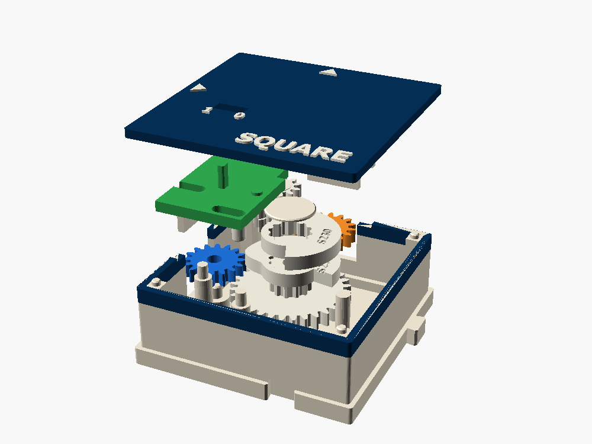
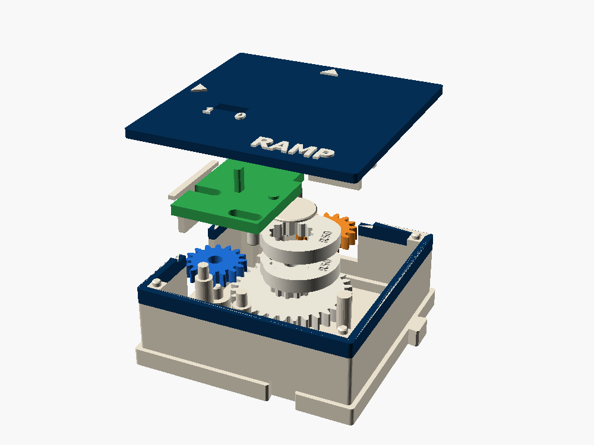

← All gear boxes · family: clocks · what they drive: ROUTE, PICK, STEER, SWAP
SQUARE · RAMP
Clocks made of gears. The line turns steadily and the N port steps between low and high, once a cycle. Clip two cam plates together at a new angle and you change the duty; swap in a heart cam and you get a triangle or a sawtooth.
1 cell · W in (16) · N out, a level 5.86 mm high · 1 cycle per crank turn · cost about 4

Set the duty, set the ramp
Pick a box and its plates. The trace shows the level on N over two cycles: the bottom plate dashed, the top plate dotted, and the bold line is what the finger follows, whichever plate stands out further.
A finger on two cams
- W turns the cam stack C at half speed (32 teeth), so one cycle is two port turns, one crank turn.
- Two cam plates sit on C's 12-tooth spline, one above the other. A round finger hanging from a slider rides their west edge and follows whichever stands out further: the box reads the union of the two plates.
- The slider runs east–west on two posts. Its rack turns P (12), and P turns the N port. A green tab shows the level through the lid, between the 0 and 1 marks. A rubber band pulls the slider back onto the cams.
- The stroke, 5.86 mm of pitch line, is exactly what STEER's select line needs. Put SQUARE south of a STEER and it steers it: high to E, low to N.



Two plates, one dwell
A SQUARE plate is a 40° ramp, a high dwell of H degrees, and a cliff. Turn the top plate k clicks of the spline (30° each) and its cliff comes 30·k degrees later, so the union stays high longer. The bottom plate gives the rising edge, the top plate the falling one.
duty = (phase + H − 20°) / 360°
| Pair | 0° | 30° | 60° | 90° | 120° |
|---|---|---|---|---|---|
| Short, H 140° | 33 % | 42 % | 50 % | 58 % | – |
| Long, H 230° | 58 % | 67 % | 75 % | 83 % | 92 % |
| Either, inverted | 100 % minus the above: 8 % to 67 % | ||||
Why two pairs? The union can be no shorter than one plate's dwell and no longer than a cycle minus one ramp, so a single split cam can't cover 0 to 100 %. Two pairs plus inverting cover 8 to 92 % in twelfths.
Making an edge out of plastic
A clock is "edge-triggered" when what matters is the moment it changes. Gears turn smoothly, so a gear clock has to make its edges.
Rising edge: the ramp
The cam pushes the finger up 5.86 mm over 40° of cam, 80° of port turn. It is slewed, not instant, at a pressure angle of about 35 to 46°, as steep as a printed cam should go.
Falling edge: the cliff
The finger drops off the end of the dwell, pulled by the band and pushed by STEER's drag. That one is a snap, a few degrees.
Other edge makers
A trip lets go at a set angle. A snap-over toggle won't rest halfway. A detent jumps notch to notch. A Geneva moves in 90° of each turn and is locked the rest.
What listens to an edge
A RATCHET pawl counts them, one tooth each. A GENEVA steps once. SWAP flips its output: that is a T flip-flop.
Triangle to sawtooth
RAMP's plates are heart cams, straight in angle, so the level is straight in time. A plate shares the cycle between rise and fall, and the gears in front set how long a cycle is.
rate up = 5.86 mm / (f · T) · rate down = 5.86 mm / ((1 − f) · T)
RS, the sine plate (drafted for SKETCH): its radius rises and falls as a cosine, so the level traces a sine wave instead of straight ramps. Fit it with set = "sine". Fed into SKETCH, it draws the sine of the three-plot demo.
Feed RAMP into STEER and the arm moves slowly through its 28°: the idler leaves E, lingers in neutral and meets N. The slower the ramp, the longer the dead band. That is a mechanical picture of why digital circuits want fast edges. Use SQUARE for a switch and RAMP for a sweep.
CRANK, TAP, SQUARE, STEER

Holding: STEER's tooth drag always pushes the select line the way that presses the finger into the cam, so both dwells hold by the cam alone. Frequency is set upstream: a ×2 in front of SQUARE doubles it, a ÷4 quarters it.
Fit-checked and committed, not yet printed
SQUARE and RAMP pass the build fit checks.
Verify on the first print: the finger climbing the 40° ramp under STEER's load, the cliff and the band, the spline's 30° clicks, the rack's tooth phase on P, and slider drag on the posts.